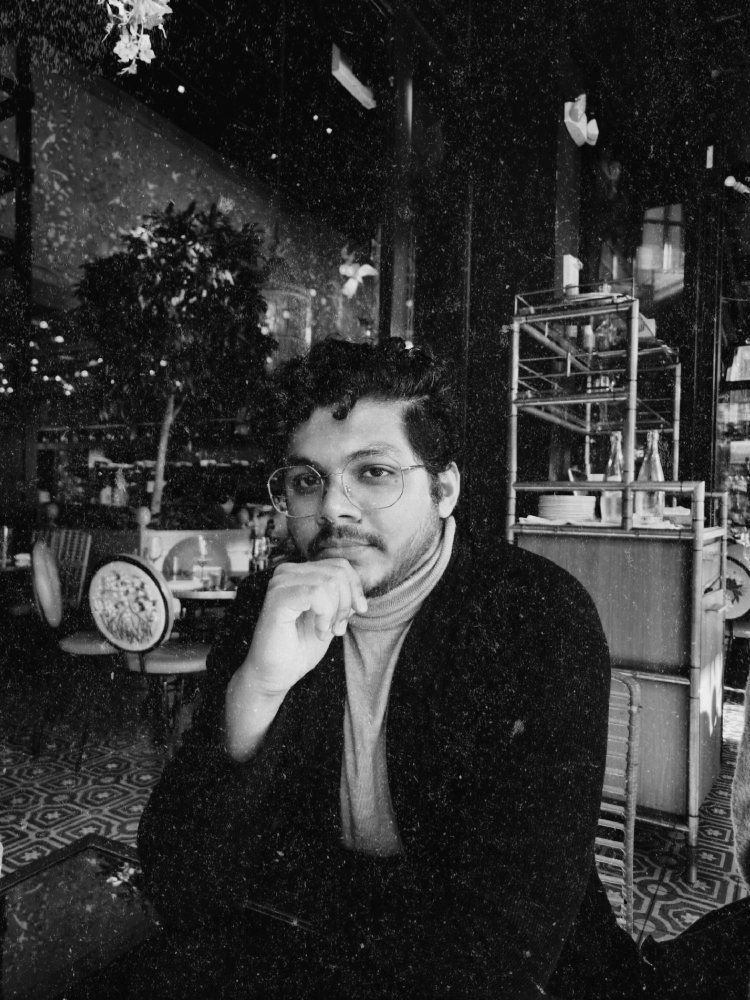

Ph.D. Researcher · University of Maryland, College Park
Are you sure you are at the right place? If yes, then you are of course someone with an inquisitive and research-oriented mind. Please feel free to contact me if you like what you see and read here. Thank you!!
try to catch it ✦

I am Pranshoo Upadhyay, an ardent lover of Physics with a B.Tech. in Electronics and Communication Engineering. I am pursuing my Ph.D. (Fall 2022) in the field of Quantum Science and Technology at the University of Maryland, College Park. I am in Prof. Hafezi's group which is affiliated with the Joint Quantum Institute (JQI), Quantum Technology Center (QTC), QuICS, and IREAP. Here, my current interest is to explore novel light-induced quantum phases in TMD heterostructures in both bosonic and fermionic regimes.
Before this, my four years of undergraduate studies were at the Indian Institute of Information Technology, Design, and Manufacturing, Jabalpur. I was involved with the group of Prof. Pravin Kondekar to design and model hybrid steep-slope FETs for low-power and high-speed applications.
Later, I was with the Centre for 2D Materials Research and Innovation (2DMRI), IIT Madras, under the supervision of Dr. Pramoda K. Nayak as a Project Associate from August 2021 to April 2022. My work spanned Topological insulator heterostructures, Thermoelectricity and Excitonics in TMDs, and Hybrid hetero-systems.
I am an explorer, 24/7. The ultimate goal I seek is to bring Mind, Consciousness, and Quantum Field theory onto a single platform.
"Never say NO to a possibility until you can PROVE, without any assumptions, that it can never happen."
To reach what I crave, I need to dig into nanoscale interactions — a sea of quasi-particles: excitons, polaritons, magnons, phonons, skyrmions. It's a long journey ahead. I hope to meet, discuss, and work with inquisitive and analytical minds.
Exploring the fabric of reality
01
Nanoscale Physics: Dive into the Unique Interactions
2D vdW materials, photonic cavities, and the exotic quasi-particles that emerge — excitons, polaritons, phonons, skyrmions and more.
Read more →
02
Consciousness: Reality that sustains your existence
A developing theory on consciousness as a universal field, mind-consciousness interaction, and the bridge between QFT and the nature of reality.
Read more →
03
Psychology: Do you know what you are?
Analyzing body language, emotions, and the origin of perceptions — channeling intense emotional states and digging into the roots of human behavior.
Read more →
Research Interests · 01
2D layered materials are the best platform to explore several intriguing physical phenomena emerging from exotic nanoscale interactions and quantum confinement.
The fact that different types of 2D materials (insulating, semiconducting, metallic, superconducting, topological phases, and many more) are available makes it much more interesting to explore these systems intelligently and make them useful for applications in spin-based devices, optoelectronics, energy sources, quantum sensing, quantum photonics, and more.
Topological insulators, Twisted bilayer systems, and 2D Magnetic materials are some of the systems I would love to work with. More importantly, my interest is to employ these materials with photonic cavities and metasurfaces to realize some really "cool" phases or phenomena.
The intriguing interaction between photons and quasi-particles within these material systems will result in a hybrid quasi-particle with both material and light nature. The former will allow it to interact and create non-linearity at a single-photon level (highly required for quantum information processing) and the latter will allow it to travel — carrying information.
With so many unsolved mysteries in this area, it is highly difficult to analyze its true power. But, just like any previous discovery, it is only after the realization of the technology that we are able to understand its true potential.
Research Interests · 02
A developing theory at the intersection of Quantum Field Theory, philosophy of mind, and ancient wisdom.
Can consciousness be defined based on the Quantum theory? Well! my intuition says it may, but rigorous modifications and physical understanding of QFT will be needed which is lacking currently.
Unlike the current quantum mind theories, my initial analysis and intuition say that the mind is definitely built upon quantum systems, but it does not generate consciousness. Rather, consciousness is a mysterious field present throughout the universe that can be accessed by our mind. In fact, my theory (which is a newborn now) also has the potential to explain free will and qualia. At present, it is difficult to say if this approach is dualistic or monistic. It depends on what you mean by consciousness.
There are several theories in the literature that attempt to explain this mysterious reality. Dvaita (dualism — mind/consciousness and body are separate) and Advaita (oneness or monism, as also described in the Mandukya Upanishad) are two distinct and opposite traditions. There are numerous versions of philosophies by various visionaries in both domains due to the dilemma in the basic definition and perception of consciousness.
Two opposing philosophical traditions on the nature of consciousness
In the dualist tradition we have Samkhya philosophy (pure consciousness Purusa is separate from Prakriti — matter, including mind), Dvaita Vedanta (God Isvara and the universe are two distinct realities), and Cartesian Duality (Descartes' version of mind and body distinction, with mind being universal). Following the monist tradition, we have Advaita Vedanta (describe only brahman and nothing else), Materialism (the most followed version — interactions within the brain create everything, and there is nothing called consciousness), and Quantum theories of Mind including the famous Orch OR theory by Nobel Laureate Roger Penrose and Hameroff, based on quantum processes within neurons (microtubules, to be specific).
Recently, there has been a spike in the number of scientists moving towards the philosophy of Panpsychism — everything is conscious, and by considering elementary particles to be conscious, the emergent consciousness of life can be learned.
The questions such as How reddish is the red color? How sweet is the smell of the flower? mislead the notion of consciousness. This awareness and sense of surroundings can very well be controlled by our individual minds created by our brains. It needs to be understood that everything around is basically a field (matter fields, EM fields, energy fields, and so on). Also, based on quantum theory, everything is probabilistic. It is here that consciousness comes into the picture.
Consciousness is the fundamental entity that is the source of life, defines the future, connects our mind with others, gives us the capability of dreaming, and does many more things that no physical field can possibly do.
Any specific part of the mind that gets uncontrolled or extreme access to this consciousness leads to some currently unexplainable mental conditions.
It should be noted clearly that consciousness is not about the active state of mind. In practice, we use this word commonly for being in a state of awakeness — which is not correct. Neuroscientists show that by tapping some specific points in the brain, specific feelings or senses can be switched on or off. But they wrongly interpret it as controlling consciousness.
Tampering with a circuit component doesn't mean it was the source — the power supply (consciousness) still runs the whole system
For instance, we now know that something has mass only when it interacts with the Higgs field (photons and gluons do not interact, so they do not have mass). Similarly, it could be this mysterious conscious field that our mind interacts with to gain access to reality.
From QFT: every unique interaction produces a quasiparticle — "Soul" as the quasiparticle of mind-consciousness interaction
From Quantum Field Theory, we understand that every interaction leads to the emergence of a distinct quasiparticle (such as phonons, plasmons, magnons, etc.). "Soul" could be the quasiparticle emerging from mind-consciousness interaction. Therefore, mind, body, soul, thoughts, decisions, and experiences are personal (individual) — but not consciousness, which is universal.
As every unique nanoscale interaction within and between quantum materials and light requires specific conditions to strengthen itself, strong mind-consciousness interaction needs yoga, meditation, and lifestyle to build those favorable conditions. This, in the words of Vedanta and Buddhism, is interpreted as accessing different levels of consciousness. When we are in the medical state of coma, our mind has a very weak interaction with this field which makes us unaware of the reality around us. When we die, the mind no more has the power to interact with this field.
Can all of these be explained through physics? Yes! definitely. I am working on it.
What do we mean by nothing or emptiness?
What are dreams — and what world do they inhabit?
Why cannot we recall any part of our life before a certain age (mostly, before 3 years)?
When exactly does life enter the child inside the mother's womb?
Have you ever noticed that sometimes you just started thinking or talking about someone and at that same moment the person enters?
Have you ever felt that being around specific people gives a strong positive or negative vibe? What is all this?
A note on this theory: Here, I have only given the gist of my building theory that needs heavy mathematical and experimental proofs. Sticking to personal opinions is not the way science is dealt with. I am open to modifications and corrections to develop a robust theory that answers everything. Please feel free to discuss more or share your views on this with me.
Research Interests · 03
Strictly speaking, I have limited knowledge of the technical terms in this vast field of research. Still, this is one of the most interesting areas for me.
I like to analyze body postures, facial expressions, eye movements, hand movements, and vocal variations collectively to notice what is actually going on in a person's head. This interest helped me in counseling my juniors when I was in the Counseling service at IIIT, Jabalpur.
1. Controlling an intensified emotion — Channeling states like sorrow, anger, depression, or loneliness in a positive direction rather than letting them consume the person.
2. Identifying the origin of strong perceptions — Digging deeper into what actually lies at the root of some powerful thoughts or beliefs in a person's mind.
Peer-reviewed work
CLICK ANY PAPER TO OPEN · TAP TO READ
Giant exciton diffusion near an electronic Mott insulator
open →
Twist dependent tuning of excitonic emissions in bilayer WSe₂
open →
Layer parity dependent Raman-active modes and crystal symmetry in ReS₂
open →
Ferroelectric Negative Capacitance Assisted Phase-Transition Field Effect Transistor
open →
Design and Analysis of Improved Phase-Transition FinFET Utilizing Negative Capacitance
open →
Insights into the operation of negative capacitance FinFET for low power logic applications
open →
Insight into Threshold Voltage and Drain Induced Barrier Lowering in Negative Capacitance FET
open →
Sharing what I know
Disclaimer: Here, I try to provide a genuine description of what goes into a PhD application and what needs to be known. Please keep your mind open and unbiased before reading further. Thanks!
01
How am I eligible to give you this advice?
Understanding my background and why you should (or shouldn't) trust what I have to say — before diving into any advice.
Read more →
02
Are you a Freshman or Sophomore? Read This and Follow.
A year-by-year guide for students at the beginning of their undergraduate journey who are considering a PhD.
Read more →
03
Are you a Ph.D. Applicant? You have come a long way!
Practical advice on SOP writing, cold mailing professors, letters of recommendation, and everything for the final stage.
Read more →
04
Facts about the US Ph.D. Acceptance and Rejection.
Does brand matter? How to pick a research group? Should you follow rankings? What if you don't get in anywhere?
Read more →
Ph.D. Awareness · 01
Hello there! I am someone with a B.Tech degree in ECE from IIIT Jabalpur, India (assign whatever tier you like). It is an institute much better than most of the government institutes in India, including several NITs (except the top 3 or 4) and other IIITs. Better in terms of what? Well! in terms of research, that is what this page is all about. But, as we all know, in India, there is a tremendous gap between the IITs/IISc (here, I am considering only the institutes that have engineering because for science there are many other good institutes) and the rest of the institutes in terms of everything (funding, connectivity, international opportunities, research, intensity of courses (name may be the same, but it differs a lot), reputation, and whatever else you could think of). But, the only important factor that can hold someone from reaching heights is the environment with no research motivation.
So, coming back to the point, I have no international research experience (Covid killed it) nor do I have any recommender who is highly recognized in my field (no offense, but it's true). What I do have is highly reputed publications, experience in varied fields of research, and a research position at IIT Madras after my B.Tech. With these things and the five P's of life, I was able to receive Ph.D. offers from 3 reputed places (UMD, UW Seattle, and Purdue) out of just 6 (this has a sad story again related to my institute, but let us not get into this) applications.
During my journey, I had literally no one around to guide me through most parts (how to begin my research, whom to approach, what and when to learn, what are the research-based internship programs for undergrads, what are difficulties in the application process, how to approach faculties for Ph.D. or other positions, where, when and how to search for internships, how to analyze the right groups to apply, and many other such confusing things.......). I did all by myself. Spent over 2 years tabulating the interesting groups, universities, programs, and other related stuff. Spent months during my second year to get all the possible internship programs I could apply for (It even happened that I came across many of them after their deadline).
This was a great struggle, but I firmly believe that these struggles are the ones that make you strong, aware, and independent. So, I want to help others, but not spoon-feed them. I only aim that the future applicants do not suffer because of a lack of information or waste their valuable time on some unnecessary things.
Ph.D. Awareness · 02
Okay! So, here you are trying to find the right path to follow that will aid you to become a Researcher in the near future. From what I have experienced and observed, dividing your four academic years into the following stages will definitely prove advantageous. Click each year to expand.
Year 01
Freshman
Be the Receiver. Grow.
Year 02
Sophomore
Be the Jack of All Trades. Expand.
Year 03
Junior
Be a Seeker. Learn.
Year 04
Senior
Be Persistent. Resolute.
This is the year of transition from school life to college life. You will take some time to adjust to this environment. Do not worry about your far future now, just don't. Trust me! I have been the person who has always planned for several years into the future. But, it will not help in your first year. Relax, make friends (good ones, just don't get carried away by the crap around you), and, most importantly, focus on every single course in the curriculum. Never neglect the latter or else you will regret it later. The courses in your first year are the fundamentals. You may have the feeling that you know or it is not needed for your path, but try to go beyond the class. You will realize it while taking advanced courses (plan those courses now). Try to learn as many things as you can. Do not restrict yourself to one single topic at this stage. Find out about the softwares/tools required in your stream and learn them. Most importantly, learn how to write proper mail (This is something that the majority of students need to work on). This is all you need to do. Be the Receiver! Grow.
Now is the time you try to do something in several sub-fields in your domain of interest. For instance, my domain was ECE. I chose to do projects in the fields of Image-processing and ML-enabled electronic systems, Robotics, Embedded Systems, Nanoelectronics, Laser-based devices, and Plasmonics. Although I was sure of my true interest since my school days, I practically did something in all of these to be certain about my interest and make sure that I do not regret my decision later just because I had not tried other things. When you try different things, not only do you get to know which one interests you most, but also you get to think about and connect things from different fields. This lacks in many researchers.
Do some internships during the summer break in a related field if possible. There are many opportunities for summer internships at premier science and engineering institutes in India (VSRP, ICTS, IITs, SRFP, CeNSE), Austria (IST), Japan (OIST), Singapore (NTU/NUS), Taiwan (TEEP, TIGP), Saudi Arabia (KAUST), and other open programs (MITACS, Charpak, CERN, SN Bose program, etc.). Remember! by this time you also must make yourself known to the professors with whom you would want to carry out a mini-research project. Be the Jack of all trades! Expand.
By this time you must be aware of the topics you are interested in. It might not be very specific, actually, it should not be specific. For instance, I was well aware that I want to work in a field with a fusion of condensed matter physics and photonics. I began my research work at the end of my sophomore year on a topic that was available to me in my research group back then. This year is to learn the whys and hows of graduate research, know what it takes to be a researcher, and strengthen your mind before you enter that phase of your life. Also, start preparing for GRE and TOEFL and get rid of them. Finally, begin preparing a list of groups where you would like to apply for your Ph.D. (just make the list, this will in no way be any close to your final list). Be a Seeker! Learn.
This is a hectic year. You will have no time to waste. If you do, then sorry you are rejected! Before even entering your senior year, if your college has the option, go for the research internships during the summer break. Mostly, a research institute and not a company. It is the time to work, work, and connect. Keep mailing professors for a semester-long research internship. Never lose hope. Never. Do not compare yourself to anyone else. This is the worst thing you could do to yourself. If you are from an institute like mine, which has no great recognition, then you will have to make more effort. Your mails will get unnoticed most of the time, with no reply 90% of the time, but still, you will need to look for that one positive reply. You just need one, my friend, just one. The same is the case when you will apply for Ph.D. positions.
For details on how to apply and other things about applications, look at the section below. Finally, always have a solid backup plan at every step of your life. Analyze the assumptions you are making before taking any step and never rely on your friends on this matter. Be Persistent! Resolute.
Ph.D. Awareness · 03
That's great! Unlike the majority of the people, you have decided to pursue research. Now, before you finalize this decision and submit your applications, I have tried to put down some major points about the process that may help you.
I specifically assume that you are either someone who is a senior or has completed his/her bachelor's degree. Also, it is considered that you are applying for a Ph.D. in the fields related to engineering (any major specialization) or applied science. I am specifying these because I have struggled to find some guidance specific to my domain. I do not agree with the concept of "generalization" while giving advice for a Ph.D. All programs are different and, in fact, the same program is different in different universities.
Alright, just calm down. I know you have too many doubts and want to know it all at once. But, my friend, it will never happen that you get everything in one place. Even if you get a lot of info from here you will still be investing a lot of time surfing to find more details. It will happen, and that is a good thing.
Let's begin. The first thing that you need to make sure of is the list of all generally required documents for your Ph.D. applications. This list includes your statement of purpose (SOP) or letter of motivation, Transcripts (Grade sheets), English scores, Passport, Resume/CV, and 3 Letters of Recommendation (of course you are not going to write them, but make sure you have the professors ready). All these documents must be ready at least by the month of October. By ready, I mean that you should have your first draft of SOP and CV ready along with other documents.
Now, how to write an SOP? For this, you have hundreds of videos on YouTube. However, I will strictly suggest that you follow these steps and be yourself. Trust me! You do not need to know what sentences you need to write, you just need to know what must and must not be included. Click each section to expand:
Research about the program: Find out the department's recent highlights. For instance, the ECE dept. of UMD (Area: Quantum Technology) is benefited from the presence of world-class quantum centers (JQI, QTC, IREAP, QuICS). Also, maintain an Excel sheet where you note down the web pages and details every time you find something more about that university. This is very important as you will not remember everything when you start drafting. This spreadsheet will help you with your writeup. Here you can also note down all the details/requirements that the program mentions about the SOP.
Attract the Research groups: Dedicate a paragraph to detail your interests in 3 to a max of 4 groups for a particular program. Two sentences max for each group. Actually, one is enough. It will contain the area that the group is currently active in and your specific topic of interest in their group. For instance, "I wish to work on vortex beam-controlled correlated electronic phases in twisted bilayer materials in Prof. X's group that has made exceptional contributions to topological photonics and quantum optical control of electronic states." You need not be too precise with the topic of interest unless you are sure about that or have already talked with the professor. Also, make sure the paragraphs, before this one, that are explaining your background and research interests align with these groups. So, modify each SOP accordingly.
It is one of the most necessary steps. As I told you earlier, your first draft should be ready 2–3 months before you actually submit it. Once you have your draft ready, share it with the ones who are currently pursuing their Ph.D. in America. Believe me, sharing with the ones who have never applied to the US will not help you. LinkedIn is a great place. At least it helped me a lot. I did not get help from anyone whom I knew and who had applied earlier. However, connecting to some amazing graduate students on LinkedIn allowed me to share my first draft of SOP and get amazing feedback. Some of them were so unique that I did not even have any idea about them before.
After my first revision, I still made 6 more revisions before I actually submitted my SOP. Yes! There will be a lot of revisions that you will do. So, start early. As, during self-revision, you will have to write a draft and then forget about it for at least two weeks. Then, revisit your draft with a completely fresh mind and you will be surprised to see so many mistakes.
Mail the professors before submitting your application (preferably between Oct–Dec), then reply to the same mail after you have applied to the program and let them know you are interested and have applied. Wait patiently for the response, most may not, but a few may. What to mail? Okay, so divide your mail into three paragraphs (none of them should be more than 3–4 sentences). The first one describes who you are and what is your intent. The second one talks briefly about the work you did and papers you read from his/her group. The last one will be your request for a conversation or a reply or availability of positions or anything that you want to know.
Remember, always read your mail and check if you will go through such a mail if you were some big name. If not, rewrite the mail and keep it crisp and concise. Also, make sure of the timing of sending your mail. Usually, most prof. go through their mails early morning (at least most of my emails, when sent during that time, were read and later replied to). However, have patience and accept that you will, in general, have to mail 2–4 times to get a reply (Don't keep pestering them with the same mail).
Congratulations! You have a great SOP in hand. Now, notify your recommenders about your applications. Apply for a maximum of 9 programs. It is an optimum and safe number. Actually, I could only apply to 6. But it is a sad story so let's not get into it. Remember! it is always advisable to tell your recommenders if you want some specific qualities or instances to be highlighted in the LOR. Give them some major points that you would like to be mentioned. But, do not share the same points with all the recommenders. That would be a foolish thing to do. Finally, for your resume, have a look at mine here. I think it is structured in a great way or that is what many people have told me. So, yeah! That is all that you need to apply for a Ph.D.
Ph.D. Awareness · 04
Click each question to expand the full answer:
Oh! Definitely. I strongly appeal to you not to fall into the trap of ignoring the reputation of your institute and recommenders. This misconception is something that has been deliberately spread over the internet. Most people who say that it is of less importance either are not aware of it or are themselves from a great place or group. Let me tell you that I am not saying that a person from a lower-ranked or internationally unrecognized university will not get a direct Ph.D. I am saying that you will need to work much harder to show that you are better than others and probably your application may not be even reviewed at the topmost universities like MIT, Stanford, Berkeley, etc. Yes! Believe me, I have analyzed it for several months and the data comprises my own connections (more than 40).
NOTE: Please do not misinterpret my words and assume that the ones at recognized places do not have to face difficulties. Getting a Ph.D. admit is no one's piece of cake. However, I am very well aware of why the topmost universities/groups consider students from recognized places. In fact, they are in most parts right to do that. Also, here, I am strictly talking about Ph.D. applications and not about MS applications in the US. For MS, you are welcome to apply anywhere. You can have a look here for MS.
If you are from an institute not well known, then there are two paths to choose before you apply for a Ph.D. The first way is to go for MS in a good university. In India, you can give examinations like GATE or JAM and get into IITs. This option will tremendously help you to improve your college tag as well as get connected to recognized researchers and professors. You do not want to simply spend your money on applications and see yourself get rejected from every top place just because they did not know your college well. However, if you are having no shortage of financial sources, you can definitely apply for MS abroad. The second way is to go for a research position for a year in some reputed research group either within your country or abroad (For Indians, I will suggest going abroad).
Let me give a real example so that you understand. There are three applicants A, B, and C. A is from IIIT Jabalpur (ever heard of this place?), B is from IIT KGP, and C is from IIT Bombay. Now, B and C apply to many places among which MIT, Stanford, and Berkeley are in common. A does not apply to any of them but rather applies to universities ranked a bit lower than these, including Cornell and UT Austin. A does not get a single reply from the university as well as the professors at both the places. C hears from all the places, is interviewed, and gets selected everywhere. B hears from two of those listed here and gets rejected from all of them later. Now, let's talk about their profile. A has no recommender who is well known in the area and has no international internship. However, A has a strong research background with over 6 publications in highly reputed journals. B has a great research profile with over 6 top conferences (he is from CS) and has worked intensively with a group at IISc. C has a great academic profile and has undoubtedly strong knowledge about his field but just one published paper at the time of application. Here, the difference between A and (B, C) is very clear. But, what made the difference between B and C? It is the connections of the group. C came from a group that has great connections abroad and a marvelous track record of sending students to top places in the US. So, you are smart enough to realize. However, on a good note, A still got GRA offers from some best places, including U of Washington, Seattle; U of Maryland, College Park; and Purdue, West Lafayette. A knows more than 10 people from India who will be joining UMD and all of them are either from IITs or IISc.
Now, there is another candidate D from an NIT. D has no significant research work during B.Tech. However, post-B.Tech, D goes to a highly reputed US university for a year (UT Austin). Later, D gets admitted to MIT. These are just a few examples that I have listed. I have many and have looked at them closely.
Therefore, what you need to understand is that blindly applying to places will get you nowhere. See which groups actually take students in an unbiased manner, study statistics of accepted students, do your homework, and then you will definitely find a place for yourself, if not the topmost. But, you will need to put much more effort than others. Just keep this in your mind.
Good question. You need to do a lot of background work before selecting research groups or mentioning them in your SOP. First, is the group open to different student backgrounds or has a tendency of accepting students from selected places. There are hundreds of groups in every field that have this tendency. So, be aware of such groups. Next, analyze what sort of group suits you. I mean, there are broadly two kinds. One in which you will directly be in touch with your guide and he will keep taking updates from you now and then. Here, you will do the work mostly alone and would rely on your supervisor entirely. Second in which you will be mostly working with other Ph.D. students or PostDocs rather than your guide. However, you will definitely be in touch with him frequently. My way of working matches the latter one. So, I chose accordingly. More PostDocs usually imply more projects and much ongoing research.
If possible, try to contact current or past students to know more about how the group functions. Also, I will suggest that you thoroughly check his/her connections and collaborations. Finally, make sure the group you are applying to has an updated group page, and do check out the Google Scholar page of the guide and the recently graduated students. If possible, try to reach out to the current and graduated students. Most will not reply until you are selected by the program, but there will be a few who will. Just keep trying and be professional and polite while mailing.
No! Never. People who do so are usually the ones who have no clear idea of the research that happens in the field they are applying. Let the people around you talk about ivies and MIT. They themselves do not have the capacity, so just leave them. For instance, the University of Maryland, College Park is ranked 59th overall and 20th among public universities in the US. However, if you look at the research in the field of Quantum Science and Technology, it surpasses all the major universities and is consistently considered among the World's Top 10 Quantum Institutes with one of the best Ph.D. programs in Quantum (Quantuminsider, USNews). So, focus on the research groups and the facilities that are available in that university in particular to your domain. Also, make sure that there are other groups that are working on similar areas. Do not apply if there are only one or two groups related to your interest. This may trouble you later. You will know about these things when you read more and more research papers related to your field. Also, you can have a look at department-specific rankings from US News if you do not already have some idea. Best of Luck!
Okay! This is something you will be disappointed to know. In Ph.D. admissions, in contrast with MS applications, the probability of acceptance has much more major factors that involve humans. For instance, the area you come from does not suit the groups very well, the area you want to go into doesn't overlap very well with the groups there, the groups you mentioned in the SOP may not be interested in taking candidates with your specialization during that particular intake, the groups may not be taking a candidate from that department this year (remember many faculties are affiliated to different departments), the selection committee is unaware of your college, the main members of the committee were distracted by something else while reading your application, the committee or the professor did not get excited about you after reading your SOP, and on and on....
There are several factors (in fact, a majority of them) beyond your control that you must know but should not worry about, as worrying will lead you nowhere. So, what is important is that your application should be as perfect as you can make following the above-said procedure and have plenty of backup plans. Now, let me tell you about my story.
I am someone who was very sure about pursuing a Ph.D. and going into academia later on. But, as I have mentioned many times earlier, there were a lot of concerns about getting accepted. So, I had a few backup options with me. The first was to go for MS at IITs or some countries that have scholarships available. The second option was to apply for an international research position in a reputed place. There are actually many great places where you can easily apply, such as OIST Japan, IST Austria, KAUST Saudi Arabia, and NTU/NUS. Now, many people have this notion that backup options mean applying for a Ph.D. at a place that according to you is ranked low in your area or to a group where you have higher chances of getting in, but you do not actually want to work there. These are the most stupid things to do. Yes! it is stupid. I will never encourage anyone to have backup options that could harm your future.
Look, delay in achieving what you need is acceptable, but throwing yourself into anything to save yourself from getting hit by the questions of society is the most senseless thing to do. If you see it carefully, I had no university which was ranked lower in my area, had fewer groups working in my area, or had less reputation of some kind. UMD, UW Seattle, Purdue, Rice, UT Austin, and Cornell. Yes, I did not apply to the very top universities, but that was due to some unfavorable conditions. Finally, I would like you all to remember that I was actually having high confidence in not getting a reply from any university (not because of my profile though). Actually, apart from other factors, I had an additional reason to worry — just 6 applications. But, I only focused on my application and backup options, leaving everything else beyond my control in the hands of the ultimate power (commonly known as God). Worry less, Work more!